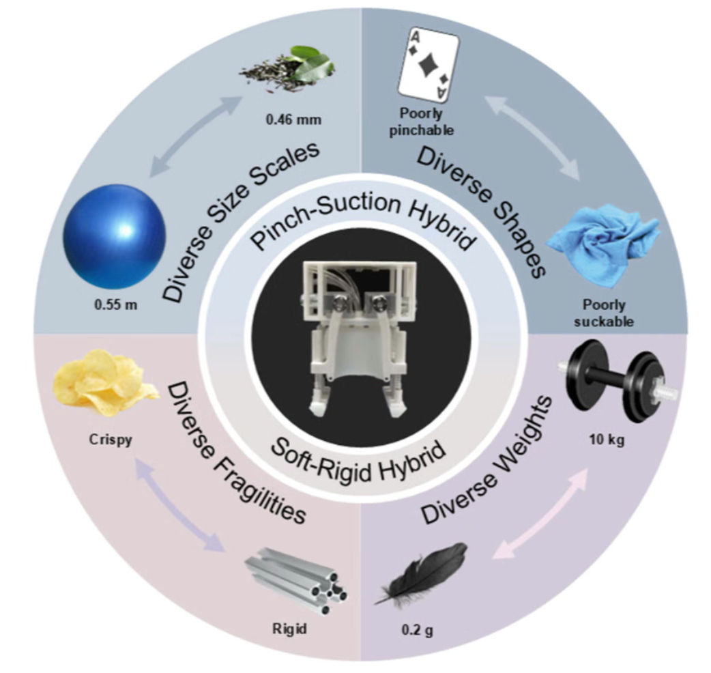

Soft–Rigid Coupling + Pinch–Suction Hybrid Mechanism: Enabling Multimodal Grippers for Universal Grasping
Development of multimodal grippers combining soft pneumatic actuation with suction for enhanced grasping diversity and adaptability. Innovative coupling mechanism design enables full-range grasping from 0.2g to 10kg objects.
Read Article